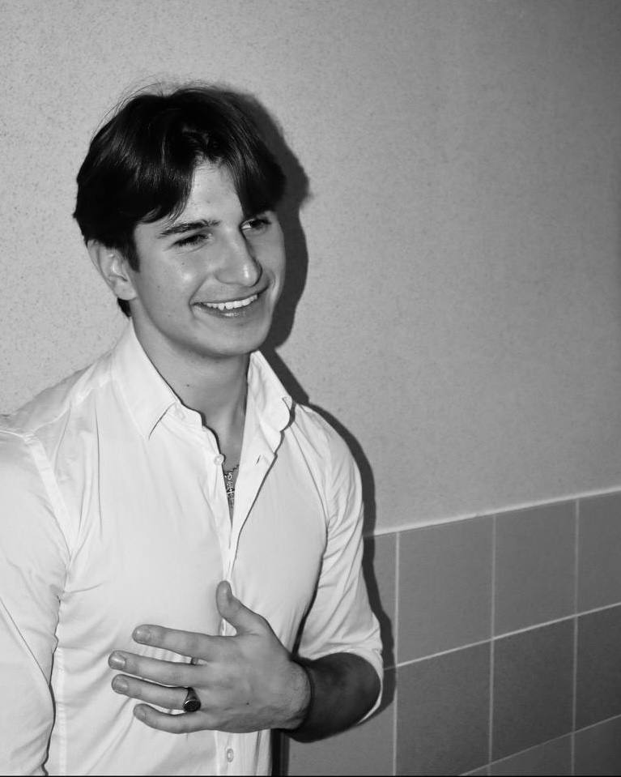

Mes Contacts



À propos de Moi
Je suis Bohdan DYSHLEVYY, étudiant de 19 ans en troisième année de Bachelor Universitaire de Technologie (BUT) Réseaux & Télécommunications à l'IUT Nice Côte d'Azur, en alternance au Centre Inria d'Université Côte d'Azur.
Passionné par les réseaux, les systèmes, la cybersécurité et le DevOps, j'ai participé à de nombreux projets autour de l'administration système, des infrastructures réseau, de Kubernetes, de Docker, de l'automatisation et du cloud.
J'ai été admis en cycle ingénieur Informatique et Réseaux parcours Systèmes et Réseaux à IMT Mines Alès pour la rentrée 2026. Je suis actuellement à la recherche d'une alternance de 3 ans afin de poursuivre ma formation d'ingénieur tout en développant mes compétences au sein d'une entreprise.
Originaire d'Ukraine et installé en France depuis plusieurs années, je suis une personne motivée, curieuse et rigoureuse. En dehors de mes études, je pratique la musculation et la musique.
Mes Contacts
